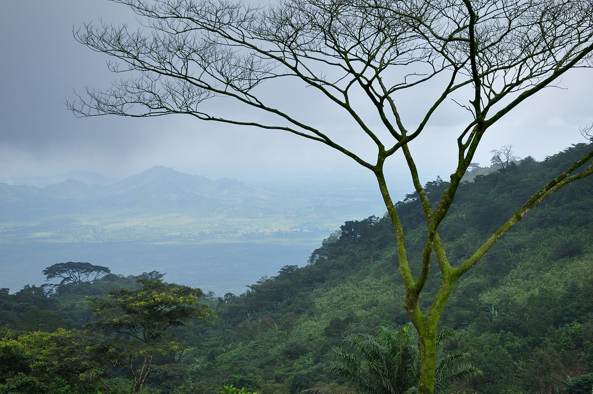
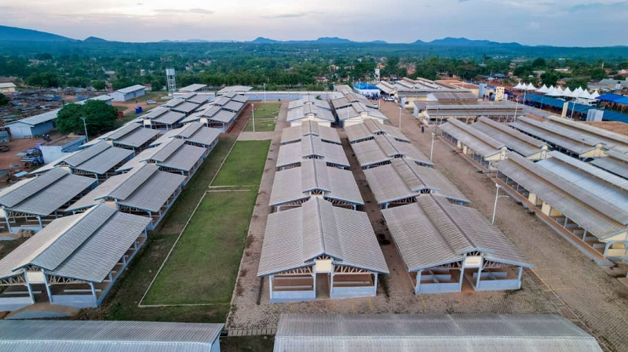

À la découverte de ma ville
Trois regards, une ville pleine de vie et de beauté

Le Mont Kloto
Depuis les hauteurs du mont Kloto, Kpalimé se dévoile sous un angle unique.

Le marché central de Kpalimé
Coloré, animé et plein de vie, le marché central reflète la diversité culturelle de la ville.

Centre artisanal de Kpalimé
Un lieu vivant où les artisans partagent leur savoir-faire et leur culture.